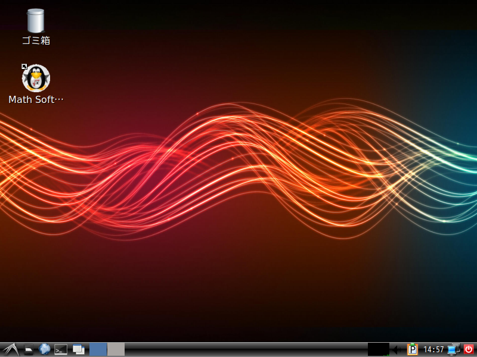
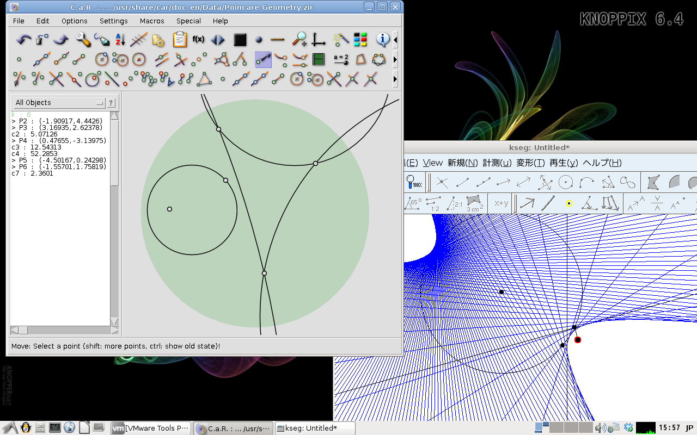
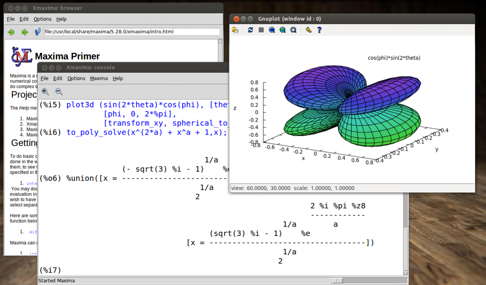

Twenty years of mathematical software
HAMADA Tatsuyoshi
Nihon University/OCAMI
CoSaN2025, Osaka Metropolitan Universiy
2025.01.08
Mathematical Software
- is software used to model, analyze or calculate numeric, symbolic or gemetric data. (Wikipedia:Mathematical Software)
- For example,
- Software calculator
- Computer Algebra System (CAS)
- Statistics
- Theorem provers and proof assistants
- Optimization software
- Geometry softare
- Numerical Analysis
- Mathematical publishing and presentation systems
- ...
Some problems of mathematical software
- Sustainability of system development
- Portability and verifiability of research results
- Spreading of software
- Easy inteface for users
1. Sustainability of system development
Do you know SIMATH?
- A computer algebra system for number theoretic application.
- Developed by H. G. Zimmer and his research group at the Universität des Saarlandes, Saarbrücken (Germany).
- SIMATH is a set of C libraries.
SIMATH
- How do we get SIMATH?
- How do we use SIMATH?
- In 2000s, SIMATH was attempted to share as an open-source software by Prof. K. Nakamula (Tokyo Metropolitan University)
The Open Source Definition
- Free Redistribution
- Source Code
- Derived Works
- Integrity of The Author’s Source Code
- No Discrimination Against Persons or Groups
- No Discrimination Against Fields of Endeavor
- Distribution of License
- License Must Not Be Specific to a Product
- License Must Not Restrict Other Software
- License Must Be Technology-Neutral
The Cathedral and the Bazaar
- is an essay, and later a book, by Eric S. Raymond on software engineering methods, based on his observations of the Linux kernel development process and his experiences managing an open source project, fetchmail.
- The essay was first presented by Raymond at the Linux Kongress on May 27, 1997, in Würzburg, Germany, and was published as the second chapter of the same‑titled book in 1999.
- Wikipedia: The Cathedral and the Bazaar
NZMATH
- is a Python calculator on number theory. Its development started at Nakamula laboratory, Tokyo Metropolitan University. Today it is developed at SourceForge.net .
- You can install NZMATH with pip manager
- 3-clause BSD License
Open source software is one of the solutions to sustainability.
2. Portability and verifiability of results
- One of my friend wanted to use Macaulay2 in Mid 1990s.
- Macaulay2 is a research system created by Daniel Grayson (from the University of Illinois at Urbana–Champaign) and Michael Stillman (from Cornell University) for computation in commutative algebra and algebraic geometry.
- But, my friend was not interested in computer, and he was not familiar with any Unix system.
- In 1990s, sometimes, we need Unix system for using mathematical software for research.
Linux
- Linux is a family of open source Unix-like operating systems based on the Linux Kernel first released on September 17, 1991. by Linux Torvalds.

KNOPPIX (2000-)
- KNOPPIX is an operatng system based on Debian designed to be run directly from a CD or DVD or a USB flash drive. It was first released in 2000 by German Linux consultant Klaus Knopper.
- From 2002 to 2015, Kuniyasu Suzaki (AIST) was published KNOPPIX Japanese edition.
KNOPPIX/Math (2003-2012)
- First, I and K. Suzaki distributed 1000 pieces of KNOPPIX/Math a MSJ meeting 2003.
- KNOPPIX/Math is a project to archive free mathematical software and free mathematical documents and offer them on KNOPPIX.
- It supported by JST-CREST Hibi team (2008-2013) and Kakenhi.
Many thanks to
- Martin Guest, Yoshihiro Ohnita and Ken Nakamula (Tokyo Metropolitan University)
- Nobuyuki Takayama, Masayuki Noro (Kobe University) and OpenXM committers
- Yoshiyuki Nakagawa (Ryukoku University) and Hiroshi Yokota (Toshiba CAE)
- Takayuki Hibi (Osaka University) and Akimichi Takemura (The University of Tokyo)
- Joris van der Hoeven (Ecole polytechinique), Michael Joswig (TU Berlin), Markus Hohenwarter (University of Linz) ...
- S. Kumaresan (University of Hyderabad), Ajit Kumar (Institute of Chemical Technology, Mumbai) and Motilal Panigrahi (NIRMA University) and Yasuhide Numata (Hokkaido University)
- Seong-Deog Yang, Young Kim, Donsen Lee, Byumyoung Lee, Joseph Cho (Korea University) and Hyung-rok Jo (Pusan National University)
- ...
MathLibre (2012-)
- We restarted the project in 2012
- MathLibre is a project to archive free mathematical software and free mathematical documents and offer them on Live Linux system.
- MathLibre contains many computer algebra system: Risa/Asir, Macaulay2, Singular, Maxima, Sage, GeoGebra ...

3. Spreading of software
- Dynamic Geometry Software
- Maxima
- Risa/Asir
Dynamic Geometry Software
- C.a.R.(1996-2022)
- Rene Grothmann (The Catholic University of Eichstätt-Ingolstadt)
- KSEG (1996-2006)
- Ilya Baran (MIT)

Maxima (1998-)
- Macsyma: AI project of MIT (1968-1982), proprietary software
- In 1998, William Schelter obtained permission to release the source code under the GPL
- Input method
2*x $\rightarrow 2x$，x^x $\rightarrow x^x$
diff(x^x, x);
integrate(1/(x^3+1), x);
f(x):=x^2-5*x+6; solve(f(x), x);

Risa/Asir
- It was a project of Fujitsu Labolatory
- Masayuki Noro (Rikkyo University) and Nobuki Takayama (Kobe University)
- Katsuyoshi Ohara (Kanazawa University) and Mitsushi Fujimoto (University of Teacher Educaion Fukuoka)
- "Gröbner Bases Statistics and Software Systems" (Springer)
- asir-contrib: Toshio Oshima (Josai University)
- Derivative, integral and basic transformations of matrices
4. Easy inteface for users
GeoGebra
- https://www.geogebra.org/
- Dynamic Mathematical Software
- Markus Hohenwarter (JKU - Johannes Kepler Universität Linz)
- Indian edtech giant Byju’s acquires Austria’s GeoGebra in a $100 million deal (TechCrunch)
- Web application, JavaScript
- Cloud service and Smartphone application
- Figure, Graph, CAS, 3D, Statistics, ...
Jupyter Notebook (2011-)
- Project Jupyter is a project to develop open-source software, open standards, and services for interactive computing across multiple programming languages.
- The first version of Notebooks for IPython was released in 2011 by a team including Fernando Pérez, Brian Granger, and Min Ragan-Kelley. In 2014, Pérez announced a spin-off project from IPython called Project Jupyter.
Cloud services related to Jupyter
- CoCalc (SageMath)
- Python3, Maxima, Singular, NZMATH, ...
- Google Colaboratory
- Python3, NumPy, Matplotlib, SymPy, Ploly, ...
reveal.js
- The HTML presentation framework
- reveal.js is an open source HTML presentation framework.
- It's a tool that enables anyone with a web browser to create fully-featured and beautiful presentations for free.
- Change styles with CSS, include an external web page using an <iframe > or add your own custom behavior using our JavaScript API.
- The framework comes with a broad range of features including nested slides, Markdown support, Auto-Animate, PDF export, speaker notes, LaTeX support and syntax highlighted code.
CindyJS by Ulrich Kortenkamp (Universität Potsdam)
p5.js
- p5.js is a friendly tool for learning to code and make art.
- It is a free and open-source JavaScript library built by an inclusive, nurturing community.
- Project of Processing Foundation